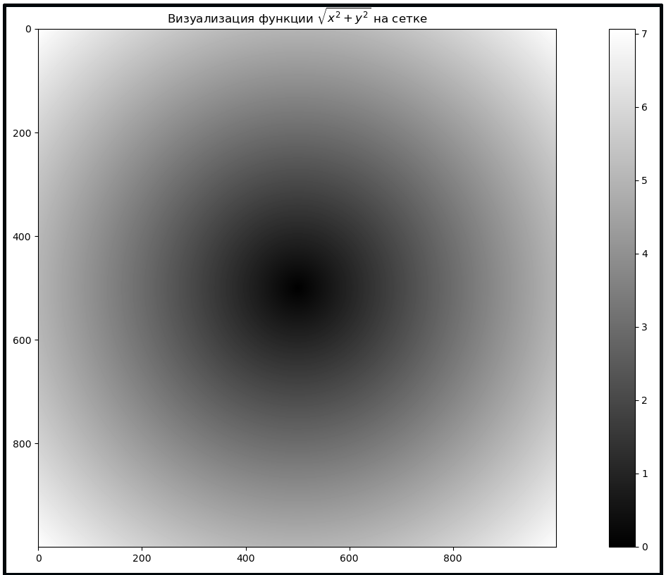

Использование массивов NumPy позволяет выражать многие виды задач обработки данных в виде кратких выражений с массивами, которые в противном случае потребовали использования циклов. Такая практика замены явных циклов на выражения с массивами обычно называется векторизацией. Вообще говоря, векторизованные операции с массивами часто на один-два (или более) порядка быстрее, чем их эквиваленты Python, что оказывает большое влияние на любые виды вычислений.
В качестве простого примера, предположим, что мы хотим вычислить
функцию sqrt(x^2 + y^2) по всей регулярной сетке значений. Функция
np.meshgrid получает два одномерных массива и возвращает две
двумерные матрицы соответствующие всем парам (x, y) в двух массивах:
In [92]: points = np.arange(-5, 5, 0.01)
In [93]: xs, ys = np.meshgrid(points, points)
In [94]: xs
Out[94]:
array([[-5. , -4.99, -4.98, ..., 4.97, 4.98, 4.99],
[-5. , -4.99, -4.98, ..., 4.97, 4.98, 4.99],
[-5. , -4.99, -4.98, ..., 4.97, 4.98, 4.99],
...,
[-5. , -4.99, -4.98, ..., 4.97, 4.98, 4.99],
[-5. , -4.99, -4.98, ..., 4.97, 4.98, 4.99],
[-5. , -4.99, -4.98, ..., 4.97, 4.98, 4.99]])
In [95]: ys
Out[95]:
array([[-5. , -5. , -5. , ..., -5. , -5. , -5. ],
[-4.99, -4.99, -4.99, ..., -4.99, -4.99, -4.99],
[-4.98, -4.98, -4.98, ..., -4.98, -4.98, -4.98],
...,
[ 4.97, 4.97, 4.97, ..., 4.97, 4.97, 4.97],
[ 4.98, 4.98, 4.98, ..., 4.98, 4.98, 4.98],
[ 4.99, 4.99, 4.99, ..., 4.99, 4.99, 4.99]])
Теперь для вычисления значений на всей сетке нужно написать то же выражение, которое было бы написано для двух координат:
In [96]: z = np.sqrt(xs ** 2 + ys ** 2)
In [97]: z
Out[97]:
array([[7.07106781, 7.06400028, 7.05693985, ..., 7.04988652, 7.05693985,
7.06400028],
[7.06400028, 7.05692568, 7.04985815, ..., 7.04279774, 7.04985815,
7.05692568],
[7.05693985, 7.04985815, 7.04278354, ..., 7.03571603, 7.04278354,
7.04985815],
...,
[7.04988652, 7.04279774, 7.03571603, ..., 7.0286414 , 7.03571603,
7.04279774],
[7.05693985, 7.04985815, 7.04278354, ..., 7.03571603, 7.04278354,
7.04985815],
[7.06400028, 7.05692568, 7.04985815, ..., 7.04279774, 7.04985815,
7.05692568]])
Теперь воспользуемся библиотекой matplotlib (ее мы рассмотрим позже)
для визуализации двумерного массива:
In [98]: import matplotlib.pyplot as plt
In [99]: plt.imshow(z, cmap=plt.cm.gray); plt.colorbar()
Out[99]: <matplotlib.colorbar.Colorbar at 0x7f99116dfeb0>
In [100]: plt.title('Визуализация функции $\sqrt{x^2 + y^2}$ на сетке')
Out[100]: Text(0.5, 1.0, 'Визуализация функции $\\sqrt{x^2 + y^2}$ на сетке')
Результат представлен на рисунке
2. Здесь использовалась функция
imshow библиотеки matplotlib для создания изображения по
двумерному массиву значений сеточной функции.
Рисунок 2: Визуализация функции, вычисленной на сетке

Функция np.where — векторизованная версия тернарного выражения
x if condition else y. Предположим, у нас есть булев массив и два
массива значений:
In [101]: xarr = np.array([1.1, 1.2, 1.3, 1.4, 1.5])
In [102]: yarr = np.array([2.1, 2.2, 2.3, 2.4, 2.5])
In [103]: cond = np.array([True, False, True, True, False])
Предположим, мы хотим выбрать из массива xarr значения в том случае,
когда значение элемента массива cond равно True, иначе выбираем
значение из массива yarr. С использованием списка это может выглядеть
следующим образом:
In [104]: result = [(x if c else y) for x, y, c in zip(xarr, yarr, cond)]
In [105]: result
Out[105]: [1.1, 2.2, 1.3, 1.4, 2.5]
Такой подход имеет несколько проблем. Во-первых, это не будет быстро
работать для очень больших массивов (потому что вся работа будет
выполняться интерпретируемым Python-кодом). Во-вторых, это не будет
работать с многомерными массивами. С помощью np.where все это можно
записать коротко:
In [106]: result
Out[106]: [1.1, 2.2, 1.3, 1.4, 2.5]
In [107]: result = np.where(cond, xarr, yarr)
In [108]: result
Out[108]: array([1.1, 2.2, 1.3, 1.4, 2.5])
Второй и третий аргументы функции np.where не обязательно должны
быть массивами, они могут быть скалярами. Типичное использование
функции np.where в анализе данных — это создание нового массива
значений на основе другого массива. Предположим есть матрица случайно
сгенерированных значений и нужно заменить все положительные значения
на число \( 2 \), а отрицательные значения — на \( -2 \). Это легко сделать с
помощью функции np.where:
In [109]: arr = np.random.randn(4, 4)
In [110]: arr
Out[110]:
array([[-1.1144006 , -1.26323994, 0.4345178 , 1.32382344],
[ 1.15196751, 0.42816243, 1.08377185, -1.28017115],
[-0.50388302, -0.94943293, -0.49274078, -0.42359743],
[-0.70021236, -0.5096619 , 0.6006224 , -0.99140402]])
In [111]: arr > 0
Out[111]:
array([[False, False, True, True],
[ True, True, True, False],
[False, False, False, False],
[False, False, True, False]])
In [112]: np.where(arr > 0, 2, -2)
Out[112]:
array([[-2, -2, 2, 2],
[ 2, 2, 2, -2],
[-2, -2, -2, -2],
[-2, -2, 2, -2]])
Можно объединять скаляры и массивы при использовании
np.where. Например, заменим все положительные элементы массива на
\( 2 \):
In [113]: np.where(arr > 0, 2, arr)
Out[113]:
array([[-1.1144006 , -1.26323994, 2. , 2. ],
[ 2. , 2. , 2. , -1.28017115],
[-0.50388302, -0.94943293, -0.49274078, -0.42359743],
[-0.70021236, -0.5096619 , 2. , -0.99140402]])
Некоторые математические функции, которые вычисляют статистику по
данным всего массива или по данным по какой-либо оси, доступны как
методы класса. Вы можете использовать агрегаты (часто называемые
редукциями), такие как sum, mean и std (стандартное отклонение),
либо вызывая метод экземпляра массива, либо используя функцию NumPy
верхнего уровня.
Ниже сгененированы случайные нормально распределенные данные и вычислены некоторые статистические свойства:
In [113]: arr = np.random.randn(5, 4)
In [114]: arr
Out[114]:
array([[-1.43597861, 0.01372626, 0.01284379, -0.92143533],
[-0.9509138 , 3.25326976, 0.05585994, 1.03115936],
[ 0.13655357, 1.14912738, -0.38493582, -1.5076265 ],
[ 0.35841008, -0.5325945 , 0.85600472, 0.31257975],
[-0.26906625, -0.31187753, 0.24331333, 0.47455591]])
In [115]: arr.mean()
Out[115]: 0.07914877668565846
In [116]: np.mean(arr)
Out[116]: 0.07914877668565846
In [117]: arr.sum()
Out[117]: 1.5829755337131692
Функции типа mean и sum принимают опциональный аргумент axis,
указывающий по какой оси вычислять статистику. В результате получается
массив на одну размерность меньше.
In [118]: arr.mean(axis=1)
Out[119]: array([-0.58271097, 0.84734381, -0.15172034, 0.24860001, 0.03423137])
In [120]: arr.sum(axis=0)
Out[120]: array([-2.160995 , 3.57165138, 0.78308596, -0.6107668 ])
Здесь arr.mean(axis=1) означает «вычислить средние значения по
столбцам», а arr.sum(axis=0) означает «вычислить сумму по строкам».
Другие методы, такие как cumsum и cumprod, не агрегируют, а
создают массив промежуточных результатов:
In [121]: arr = np.array([0, 1, 2, 3, 4, 5, 6, 7])
In [122]: arr.cumsum()
Out[122]: array([ 0, 1, 3, 6, 10, 15, 21, 28])
В многомерных массивах В многомерных массивах функции накопления, такие как cumsum, возвращают массив того же размера, но с частичными агрегатами, вычисленными вдоль указанной оси в соответствии с каждым срезом меньшего размера:
In [123]: arr = np.array([[0, 1, 2], [3, 4, 5], [6, 7, 8]])
In [124]: arr
Out[124]:
array([[0, 1, 2],
[3, 4, 5],
[6, 7, 8]])
In [125]: arr.cumsum(axis=0)
Out[125]:
array([[ 0, 1, 2],
[ 3, 5, 7],
[ 9, 12, 15]])
In [126]: arr.cumprod(axis=1)
Out[126]:
array([[ 0, 0, 0],
[ 3, 12, 60],
[ 6, 42, 336]])
В таблице numpy:prog-with-array:tbl:1 представлен полный список таких функций.
Таблица 4. Основные статистические методы для массивов
| Функция | Описание |
sum | Сумма всех элементов массива или вдоль оси. Массив нулевой длины имеет сумму, равную 0 |
mean | Арифметическое среднее. Массив нулевой длины имеет среднее значение NaN |
std, var | Стандартное отклонение и дисперсия, соответственно, с возможностью задания степени свободы (по умолчанию знаменатель равен n) |
min, max | Минимум и максимум |
argmin, argmax | Индексы минимального и максимального элементов, соответственно |
cumsum | Накопленная сумма элементов, начиная с \( 0 \) |
cumprod | Накопленное произведение элементов, начиная с \( 1 \) |
В рассмотренных выше методах булевы значения приводятся к \( 1 \) (True)
и \( 0 \) (False). Таким образом, sum часто используется как средство
подсчета значений True в логическом массиве:
In [127]: arr = np.random.randn(100)
In [128]: (arr > 0).sum()
Out[128]: 49
Есть два дополнительных метода: any и all, которые очень полезны
при работе с булевыми массивами. Метод any проверяет, есть ли хотя
бы одно значение в массиве равное True, a all проверяет, все ли
значения в массиве равны True:
In [129]: arr = np.array([False, False, True, False])
In [130]: arr.any()
Out[130]: True
In [131]: arr.all()
Out[131]: False
Эти методы также работают с небулевыми массивами. В этом случае
ненулевые элементы оцениваются как True.
Как и встроенный тип list массивы NumPy могут быть отсортированы с
помощью метода sort:
In [132]: arr = np.random.randn(6)
In [133]: arr
Out[133]:
array([-0.12728925, 0.24554644, -1.15625417, -1.4625911 , -0.78147401,
1.58324829])
In [134]: arr.sort()
In [134]: arr
Out[134]:
array([-1.4625911 , -1.15625417, -0.78147401, -0.12728925, 0.24554644,
1.58324829])
Можно отсортировать каждый одномерный массив многомерного вдоль оси,
которая задается как аргумент метода sort:
In [135]: arr = np.random.randn(5, 3)
In [136]: arr
Out[136]:
array([[-0.17959553, -0.93747164, 0.38332596],
[-0.1051853 , 0.90182293, 1.30222401],
[ 0.29822932, -0.976582 , -0.01074546],
[-0.7052856 , -0.19126606, 0.38607724],
[ 0.996878 , 0.94214515, -1.53962274]])
In [137]: arr.sort(1)
In [138]: arr
Out[138]:
array([[-0.93747164, -0.17959553, 0.38332596],
[-0.1051853 , 0.90182293, 1.30222401],
[-0.976582 , -0.01074546, 0.29822932],
[-0.7052856 , -0.19126606, 0.38607724],
[-1.53962274, 0.94214515, 0.996878 ]])
Метод верхнего уровня np.sort возвращает отсортированный массив
вместо изменения исходного массива. Быстрый и простой способ вычислить
квантили массива — это отсортировать его и выбрать значение в
определенном ранге:
In [139]: large_arr = np.random.randn(1000)
In [140]: large_arr.sort()
In [141]: large_arr[int(0.05 * len(large_arr))] # 5% квантиль
Out[141]: -1.718770519734767
В NumPy имеются некоторые основные операции над множествами для
одномерных массивов. Обычно используется функция np.unique, которая
возвращает отсортированные уникальные значения в массиве:
In [142]: names = np.array(['Bob', 'Joe', 'Will', 'Bob', 'Will', 'Joe', 'Joe'])
In [143]: np.unique(names)
Out[143]: array(['Bob', 'Joe', 'Will'], dtype='<U4')
In [144]: ints = np.array([3, 3, 3, 2, 2, 1, 1, 4, 4])
In [145]: np.unique(ints)
Out[145]: array([1, 2, 3, 4])
Сравните np.unique с альтернативой на чистом Python:
In [146]: sorted(set(names))
Out[146]: ['Bob', 'Joe', 'Will']
Другая функция, np.in1d, проверяет нахождение значений из одного массива в
другом, возвращая логический массив:
In [147]: values = np.array([6, 0, 0, 3, 2, 5, 6])
In [148]: np.in1d(values, [2, 3, 6])
Out[148]: array([ True, False, False, True, True, False, True])
Таблица 5. Операции над множествами из массивов
| Метод | Описание |
unique(x) | Возвращает отсортированные единственные элементы из x |
intersect1d(x, y) | Возвращает отсортированные общие элементы массивов x и y |
union1d(x, y) | Возвращает отсортированное объединение элементов массивов x и y |
in1d(x, y) | Возвращает булев массив, указывающий содержится ли каждый элемент массива x в y |
setdiff1d(x, y) | Разность множеств: элементы массива x, которых нет в y |
setxor1d(x, y) | Симметричная разность: элементы, которые есть либо в x, либо в y, но не в обоих массивах |